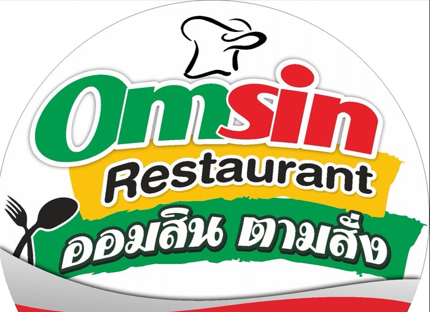
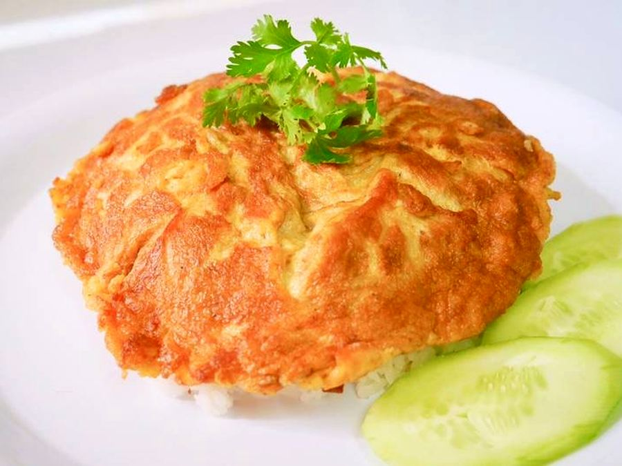

Thai food cooked to order by one family, on the Bophut road. Tell us how spicy.

Dishes from Omsin's menu boards, April 2026. Prices are on the board in the restaurant.
175/62 Moo 1, Bo Put, Koh Samui 84320, close to Bophut beach. Every day 10:00 to 21:00. Cash only.